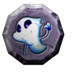
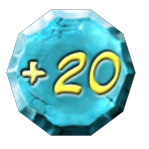

12 |
Casillas |
 |
Las casillas aparecen en el mapa del tablero en el modo Aventura. Casilla Cruce
Cuando los jugadores pasan por esta casilla, el jugador actual debe elegir una dirección. Casilla Reparar
Si el vehículo ha sufrido daños y los jugadores pasan por esta casilla, pueden decidir si quieren pagar 500 monedas para reparar el vehículo. Casilla Desafío del tablero  Cuando el vehículo se detenga en este tipo de casilla, los jugadores entrarán en un desafío del tablero. Casilla Pergamino
Cuando el vehículo pasa por esta casilla, los jugadores deberán decidir si quieren comprar un pergamino. Casilla ¡A jugar!
Cuando el vehículo se detenga en esta casilla, los jugadores jugarán un minijuego juntos. Casilla Fantasma Hechicero
Esta casilla solo se encuentra en la entrada de algunas zonas especiales. Cuando el vehículo pase por ella, aparecerá el Fantasma Hechicero y encogerá a todo el mundo. Así los jugadores pueden acceder a la zona especial. Los jugadores volverán a su tamaño normal si pasan por esta casilla cuando están encogidos. Casilla Nada
Cuando el vehículo se detenga en esta casilla, no ocurrirá nada. Casilla -10 y Casilla -20
Cuando el vehículo se detenga en una de estas casillas, un fantasma aparecerá de repente y asustará a los jugadores. Todos perderán 10 ó 20 monedas. Casilla +20, Casilla +30 y Casilla +50  Cuando el vehículo se detenga en una de estas casillas, todos los jugadores recibirán 20, 30 ó 50 monedas. |


 |
 |
 |